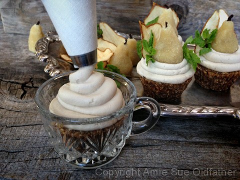

Velvety Honey Pear Frosting

~ raw, gluten-free ~
A few days ago, Bob announced that he needed a snack. This was my cue to surprise him with some yummy raw treat. I was in the middle of a recipe creation, so I sliced up a perfectly ripe pear and served it with a few slices of Vegan Swiss Cheese. I didn’t think it was anything special, but he raved about how wonderful it was and loved the pairing of the two.
Pears are tricky. Most people don’t know what to do with them and tend to eat them before they hit their prime. An unripe pear isn’t anything to get overly excited about so I can’t blame someone for overlooking them in the grocery store. A person just needs to give the pear a little love, time, and patience and they will reward you in kind.
Anyway, Bob was sitting on the couch and just mentioned that I ought to make a pear frosting. No need to say more… done and done! :) I threw some cashews into the soak water and carried on with my current creation.
The next day, I whipped up a Honey Pear Frosting. As I was about done, I called for Bob the Taste Tester (his official title) and got the thumbs up. I poured it into a jar so I could chill it in the fridge. Bob asked, I delivered, and now what? Now I need something to put it on. I sense a new cake creation on the horizon. hehe
Because this frosting has fresh fruit in it, it won’t last as long as some of the other frosting recipes on my site. I give this frosting 2 days expiration, 3 tops. It has a medium texture and can be used in a piping bag, but if it sits out for an extended period of time, it will start to soften.
Ingredients:
Yields 1 cup
- 1/2 cup cashews, soaked 2+ hours
- 2 Tbsp raw honey
- 1 tsp vanilla extract
- Dash sea salt
- 2 small pears (12 oz weight)
- 1/4 cup coconut oil, melted
- 1 Tbsp sunflower lecithin powder
Preparation:
- After soaking the cashews, drain and discard the soak water.
- In a high-speed blender combine the cashews, honey, vanilla, pears, and salt. Blend until creamy, and you don’t feel any grit in the frosting. Depending on the blender, this may take anywhere from 1-5 minutes.
- While the blender is running and a vortex is in motion, drizzle in the coconut oil. Make sure that it gets well incorporated.
- Now add the lecithin and process just until mixed in.
- Place the frosting in an airtight container and place in the fridge for 2+ hours to firm.
- This will keep for 2-3 days.
I wanted to show you what it looked like when I piped it onto a cupcake. Very creamy!

© AmieSue.com